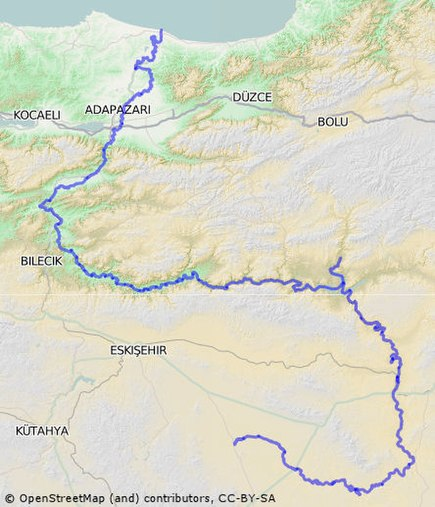

Sakarya ülkemizde önemli bir yere sahip olan akarsularımızdan birisidir. Sakarya nehri başlangıç noktası Eskişehir ilimizin Çifteler ilçesindeki Dikmen Köyü olarak kabul edilir. Bu köyün yakınından geçen Seydi Çayı ile Dedemözü Deresinin birleşmesi ile akarsu Sakarya Nehri olarak adlandırılmıştır.
Sakarya nehri Afyon ilinin Bayat yaylasından ve Eskişehir ilinin Dikmen köyünden başlamaktadır. Ülkemizde birçok yerden geçerek Sakarya ilimizin Karasu ilçesi sahilinden Karadeniz'e dökülmektedir. Sakarya nehrinin antik çağdaki ismi ise Sangarios'tur.
Sakarya nehri toplam uzunluğu 810 kilometredir. Bu uzunluk içerisinde toplanmaya başladığı yataklar da dahildir. Ülkemizde en büyük üçüncü nehirdir. Uzunluk yönünden ise Kuzeybatı Anadolu'nun en büyük akarsuyudur. Sakarya nehrinin diğer özelliklerini şu şekilde sıralayabiliriz: - Sakarya- nehri eski Yunan mitolojisinde adı Sangarius olarak bilinir. Bu ismi nehir tanrısından almıştır. - Beslemiş olduğu havzanın alanı 58.000 kilometredir. - Havzaya düşen yıllık yağış miktarı 31 milyar metreküp civarındadır. - 1 yılda 5 veya 6 milyar metreküp kadar su taşımaktadır. - Sakarya nehrinin debisi saniyede yaklaşık 155-160 metreküptür. - Sakarya nehri iki farklı yerden doğar. Birincisi Afyon ilinin Bayat yaylasıdır. İkincisi ise Eskişehir çifteler ilçesidir.
Sakarya nehri ülkemizin üçüncü büyük nehridir. İlk sırada Kızılırmak ve Fırat nehri bulunur. Sakarya nehri ise 824 kilometrelik uzunluğu ile üçüncü sıradadır. Ayrıca Sakarya nehrinin 4 önemli kolu bulunur. Bunlar Porsuk Çayı, Ankara Çayı, Kirmik Çayı ve Çark Çayıdır. Bu kollar dışında diğer önemli kolları ise Mudurnu Çayı, Koca Çay, Çark suyu ve Darıçay suyudur.
